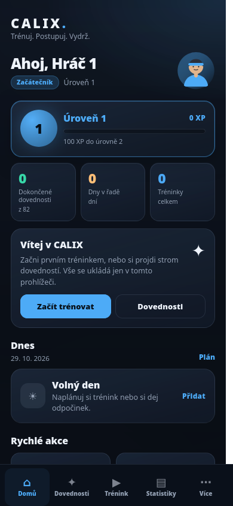
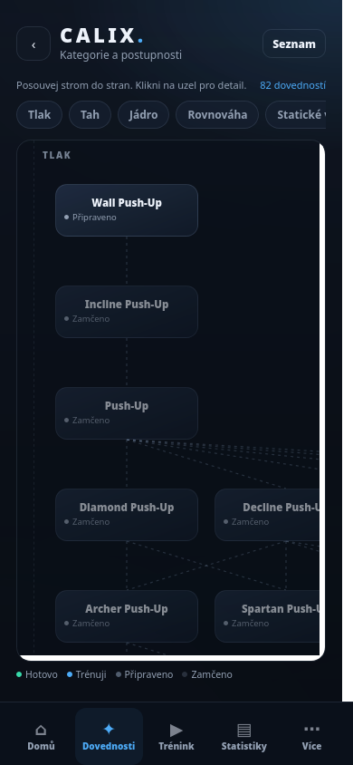
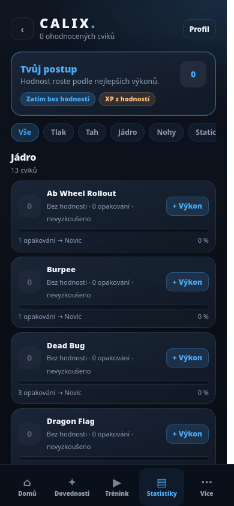

Windows
x64Windows 10 / 11
100% safe & offline
CALIX je osobní kalistenický trenér, který tě provede od prvního push-upu až po muscle-up. Strom dovedností, chytré tréninky, plán, hodnosti a úspěchy — všechno na jednom místě.
Windows · Linux · Android · iOS přes web

Stažení
Stejný CALIX. Tvoje zařízení. Tvoje data. Všechny buildy jsou zdarma a bez registrace.
Windows 10 / 11
AppImage / přenosný build
Android 8.0 a novější
Použij webovou verzi CALIXu. Otevře se v Safari a můžeš si ji přidat na plochu.
cd9ff7f312c5755b67b99dae410d33eb58a8affc5c8f9e5421368623ea0d5818
91205b4366f210646a898d7db07e7d33b7fcbebe804374973b40b4ba75ba0420
e988f800021b0c82877fa55d38752e1d2e17330052f9956072e2376ffddf3c35
Žádná registrace. Žádné předplatné. Jen ty, tvoje tělo a tvoje data.
Funkce
Od prvního tréninku po dlouhodobý systém. CALIX drží tvoji cestu pohromadě.
Od základních cviků po elite prvky. Odemykej uzly, sleduj progres a měj svoji cestu vždy na očích.
Sestav si vlastní workout, nastav série, opakování i pauzy. Nebo začni s připraveným tréninkem.
Týdenní rutina i jednorázové tréninky. CALIX ti ukáže, co je dnes na programu a co můžeš odložit.
Sbírej XP, postupuj v hodnostech a odemykej achievementy za skutečné výkony, ne za prázdné klikání.
Jeden telefon, tři sportovci. Každý má vlastní progres, historii, statistiky a vzhled.
Data zůstávají v tvém zařízení. Žádný cloud, telemetrie, reklamy ani účet, který by tě sledoval.
Ukázky
Čisté rozhraní, které tě nepřekáží. Všechno důležité je na dosah.


Bezpečnost
CALIX je navržený tak, aby fungoval úplně bez internetu. Po instalaci nepotřebuje síť, účet ani server. Všechno, co do něj zapíšeš, zůstává u tebe.
APK je podepsané. U Windows se může zobrazit SmartScreen, protože build není podepsaný komerčním certifikátem. Integritu vždy ověříš podle SHA-256 výše.
Časté otázky
Ano. Ke stažení ani používání nepotřebuješ účet, registraci ani předplatné.
Ne. Aplikace je navržená offline. Neposílá telemetrii, reklamy ani tvoje tréninky do cloudu.
Ne. CALIX funguje plně offline. Internet potřebuješ jen pro stažení souboru nebo otevření webové verze na iPhonu.
V zařízení, kde CALIX používáš. Zálohu vytvoříš ručně v nastavení aplikace a uložíš si ji, kam chceš.
Build není podepsaný komerčním certifikátem, takže SmartScreen může zobrazit upozornění. Ověř soubor podle SHA-256 a spusť jen tehdy, pokud hash odpovídá.
Ano, přes webovou verzi na zimn09.github.io/calix-web. Otevři ji v Safari a přidej na plochu.
Připraven?
Stáhni CALIX a začni svou cestu. Všechno ostatní už je v tobě.